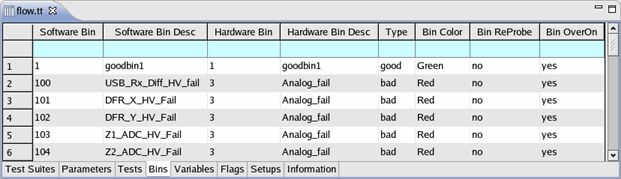

Bins page
The Bins page displays three types of bins:
- Stop bins
- Special bins (displayed with a cyan background)
- Floating bins (displayed with a gray background)
On this page, you can edit the bins in your testflow. You cannot add or delete any bins except for the floating bins. (To add or delete other types of bins, use the Flow Sequence Editor.)
Each testflow contains an otherwise bin by default, which is displayed with a cyan background on the Bins page.

The following table describes the meaning of each column.
Software Bin |
The software bin number, which is a specific value that uniquely identifies the bin, not a count. The software bin number consists of up to five alpha-numerical characters that represent the bin in the testflow and in the result display (during a production run). To be compatible with STDF, the number must be between 0 and 32767. If STDF compatibility is not an issue, you can define up to 65536 software bins. In a testflow, different occurrences of one software bin are considered instances of the same bin. All their attributes are identical, including the hardware bin number. To make this sure, you can clone an existing bin, but you cannot insert a new bin which has the same software bin number as an already existing bin. Software bins occurring more than once in a testflow are called common bins. |
Software Bin Desc |
A short description (a maximum of 256 characters) of the software bin that appears in the Properties view and the result display (during a production run). |
Hardware Bin |
The hardware bin number. The hardware bin number is a positive integer (0...999), that is used by the Prober/Handler library for binning purposes after the test. The number of hardware bins is not restricted. |
Hardware Bin Desc |
The hardware bin description in this field appears in the Event Data Log event record and in the STDF hardware bin record. |
Binning |
Good bin or bad bin. This setting determines the type of the bin and the shape of the stop bin node (triangular for good bins, octagonal for bad bins). |
Bin Color |
The color of the bin node in the testflow and in the result display. |
Bin Reprobe |
The state of the reprobe flag for this bin. If this flag is set to
See the max reprobes settings for information on the maximum consecutive number of times any of your devices may fall into a reprobe bin. |
Bin Overon |
The state of the overon flag for this bin. If this flag is set
to If this flag is set to |
Functional changes
- Introduced before SmarTest 6.3.2
- SmarTest 6.5.2: The Bins page shows stop bins, otherwise bins, and floating bins.
- SmarTest 7.4.4: Increase maximum number of bins to 65536.